Epigenetic clocks and biomarkers
Penalised regression on CpGs, what clocks measure, and methylation in cell-free DNA
Epigenetics
About this lecture
A few hundred CpGs predict a person’s age from a blood sample to within about 3–4 years. Such epigenetic clocks are the best-known methylation biomarkers, and a good case study in building, testing and over-interpreting a predictor.
- Methylation changes with age: single CpGs, and why one is not enough.
- Penalised regression (elastic net): a linear model with a price on complexity, chosen by cross-validation.
- Train, test, overfitting, leakage: a preview of Machine learning from scratch.
- Published clocks: Horvath, Hannum, PhenoAge, GrimAge, DunedinPACE; age acceleration; what clocks do and do not measure.
- Cell-free DNA: methylation tells which tissue a fragment came from; cancer detection.
- Data: Hannum et al. 2013 (656 people, 450k) to build a clock; GSE42861 (Methylation arrays) to test it.
Methylation changes with age
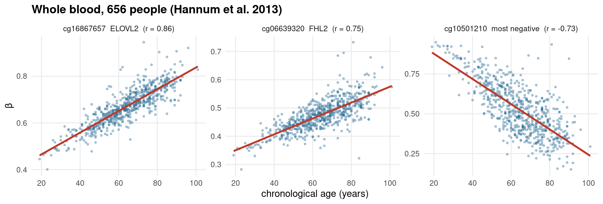
- Some CpGs gain methylation with age (ELOVL2: r = 0.86), others lose it (r = −0.73). The trends are steady over eight decades.
- But at any one age the spread is large: from ELOVL2 alone you could guess age only to within about ±10 years.
Many CpGs, each weakly related to age
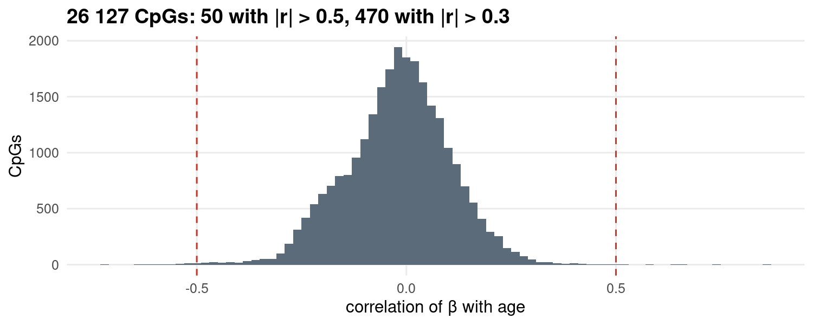
- Of 26 127 CpGs in our subset, only 50 have |r| > 0.5 with age, but 470 have |r| > 0.3: lots of small, partly redundant signals.
- Combining them in one linear model is the obvious idea. The problem: 26 127 CpGs, 459 people for training.
Penalised regression: a price on complexity
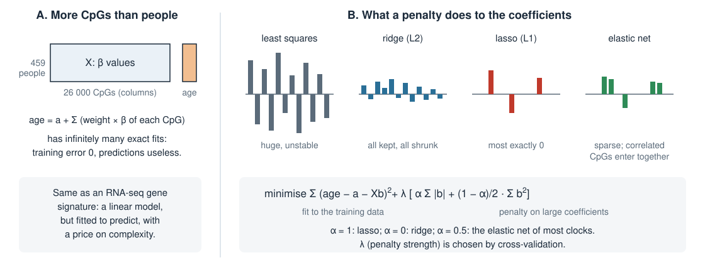
- Ridge (L2) shrinks all coefficients; lasso (L1) sets most of them exactly to zero; the elastic net (α between 0 and 1) does both and keeps groups of correlated CpGs together.
- Horvath, Hannum, PhenoAge, GrimAge and DunedinPACE are all elastic nets on CpG β values.
Choosing λ: cross-validation inside the training set
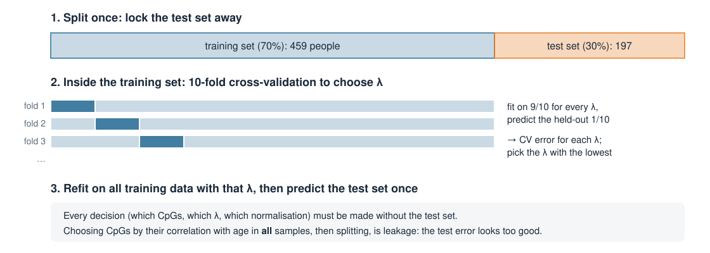
- The test set is touched once, at the end. λ (and every other choice) is tuned by k-fold cross-validation on the training set.
- Leakage: selecting CpGs by their age correlation in all samples, then splitting, makes the test error look too good.
The elastic net on real data

- Left: cross-validated error against λ. The minimum (
lambda.min) keeps 313 CpGs; the more conservativelambda.1sekeeps 36. - Right: coefficients enter the model one by one as λ decreases; most CpGs never enter.
Training error lies; test error tells the truth
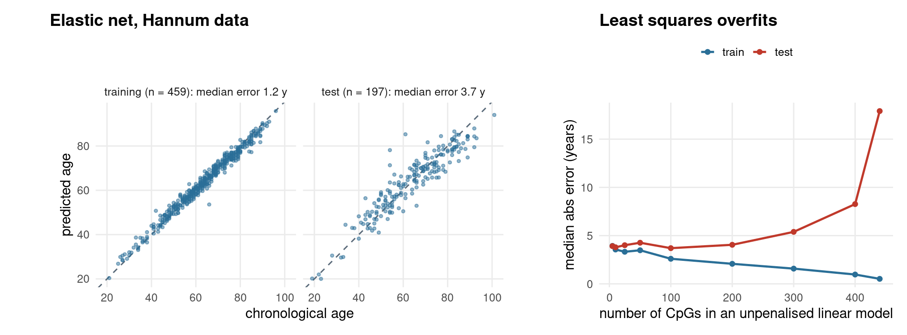
- Elastic net: median absolute error 1.2 years on training data, 3.7 years on the 197 held-out people (r = 0.93).
- Ordinary least squares on the top-k CpGs: with 440 CpGs the training error falls to 0.5 years while the test error explodes to 18 years.
Horvath’s pan-tissue clock (2013)
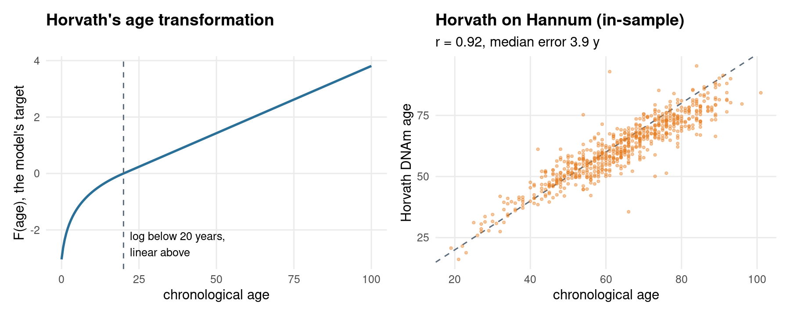
- Elastic net on ~8 000 samples from 51 tissues and cell types (27k and 450k arrays): 353 CpGs; median error 3.6 years in test data.
- Trained on a transformed age, F(age): logarithmic in childhood, linear after 20. Applied to Hannum’s blood: r = 0.92, but in-sample: Hannum’s data were in Horvath’s training set.
Four generations, defined by the target
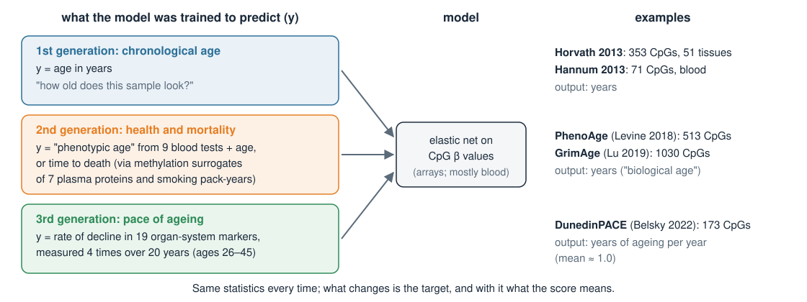
- First-generation clocks predict chronological age: the better they get, the less they can say beyond the calendar.
- Later clocks predict health: PhenoAge (clinical biomarkers), GrimAge (time to death), DunedinPACE (pace of decline).
An external test: another lab, another cohort
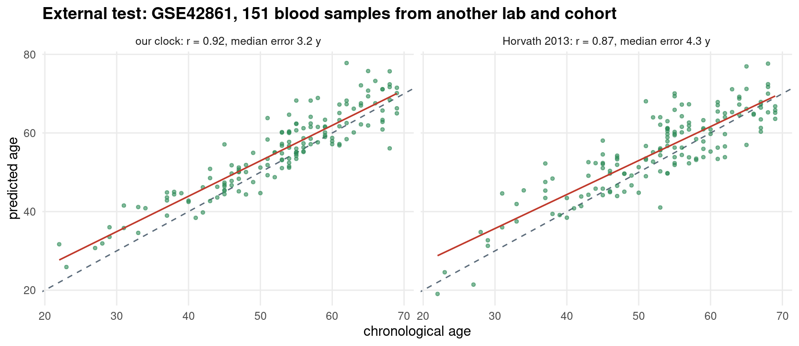
- GSE42861 (151 arrays, Methylation arrays), noob-normalised: our clock r = 0.92, median error 3.2 years; Horvath r = 0.87, 4.3 years.
- Both predict about 2.4 years too old on average: a shift between data sets (lab, normalisation, population), not biology.
Age acceleration: the residual, not the difference
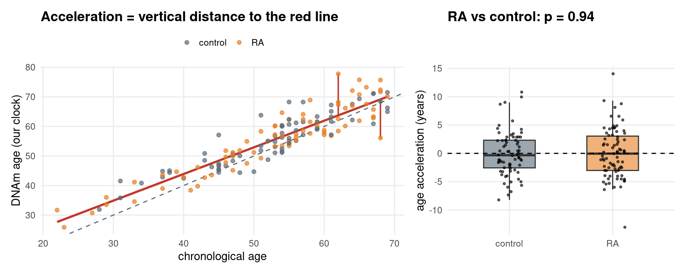
- Age acceleration = residual of DNAm age regressed on chronological age in your data. Removes offsets (here +2.5 y) and the flattening of the slope (0.90).
- RA vs control: no difference (p = 0.94). The raw difference (DNAm age − age) would carry the offset and an age trend.
Age acceleration by hand
| person | age | DNAm age | DNAm age − age | fitted (12 + 0.8 × age) | acceleration (residual) |
|---|---|---|---|---|---|
| A | 30 | 36 | +6 | 36 | 0 |
| B | 50 | 55 | +5 | 52 | +3 |
| C | 70 | 66 | −4 | 68 | −2 |
- With a slope below 1, young people look “old” and old people “young” on the raw difference. The residual compares each person with others of the same age.
- Acceleration is relative to the reference data: a different cohort gives a different line.
What clocks measure, and what they do not
- Associated with: mortality, frailty, smoking, obesity, HIV, Down syndrome (accelerated); centenarians’ offspring and some calorie-restriction studies (slower). Effects are modest: a few years.
- Partly: changes in blood cell composition (naive T cells decline with age), mitotic history of stem cells, and maintenance errors.
- Not: a measure of “true biological age” in one number, a cause of ageing, or a reliable per-person diagnostic. Different clocks correlate only moderately with each other.
- Noise: technical replicates of the same DNA can differ by up to 9 years for some clocks (Higgins-Chen et al. 2022); principal-component clocks fix much of this.
Judge the claim: “our intervention reverses epigenetic age”
- 15 volunteers, one supplement, DNAm age measured before and after 12 months; “2.5 years younger”. What would you ask?
- No control group: regression to the mean, seasonal and batch effects between the two array runs.
- Measurement noise: replicate differences of several years for single-CpG clocks; was each sample run in duplicate, in the same batch?
- Multiple clocks: five clocks reported, one significant.
- Composition: did the intervention shift blood cell counts (e.g. fewer neutrophils after an infection cleared)?
- Meaning: is a lower clock value a lower risk of disease? That needs outcomes, not a biomarker.
Beyond age: methylation biomarkers
| biomarker | what it predicts | used for |
|---|---|---|
| AHRR cg05575921, smoking scores | smoking exposure, pack-years | epidemiology; verifying self-report |
| methylation risk scores | BMI, alcohol, inflammation (CRP) | epidemiology |
| gestational age clocks (cord blood) | gestational age | neonatal studies |
| mitotic clocks (epiTOC) | number of stem-cell divisions | cancer risk |
| tumour classifiers | CNS tumour type (Capper et al. 2018) | clinical diagnosis, from the same EPIC arrays |
| cfDNA methylation | tissue of origin, cancer signal | liquid biopsy (next slides) |
Cell-free DNA: fragments of dying cells
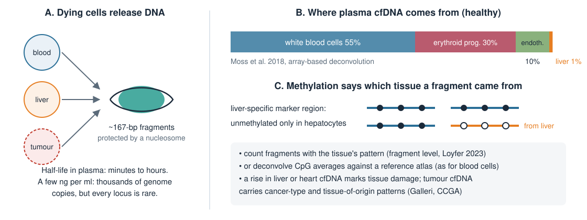
- Plasma DNA is mostly from blood cells (55% white blood cells, 30% erythroid progenitors), plus endothelium (10%) and liver (1%) in healthy people (Moss et al. 2018).
- Tissue damage or a tumour adds DNA with its own methylation pattern.
Deconvolution with a reference atlas
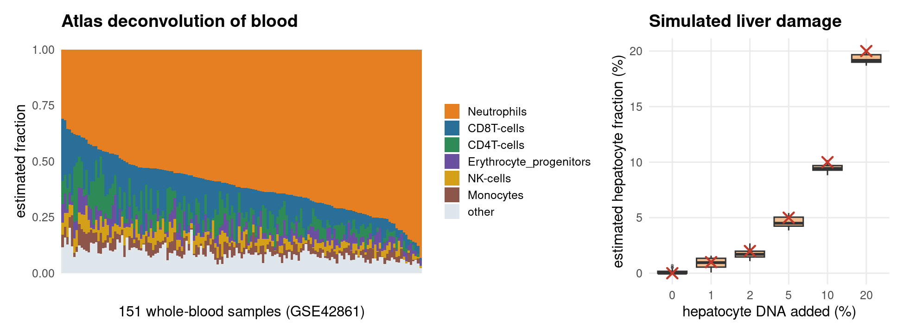
- The same linear algebra as the Houseman method: non-negative least squares against a 25-cell-type atlas (Moss et al. 2018; 6 105 of its CpGs are on the 450k array).
- Blood of the GSE42861 samples comes out as 61% neutrophils, then lymphocytes and monocytes. Simulated liver DNA is recovered: 1% added → 0.94% estimated.
Cancer detection from cfDNA methylation
| CCGA validation (Liu et al. 2020), targeted bisulfite sequencing of cfDNA | |
|---|---|
| specificity (non-cancer called non-cancer) | 99.3% |
| sensitivity, all cancer types, stage I / II / III / IV | 18% / 43% / 81% / 93% |
| tissue of origin predicted correctly (when a signal was found) | 93% |
- By hand: screening 100 000 people with 1% prevalence, sensitivity 50%, specificity 99.3% → 500 true and 693 false positives: PPV 42%.
- Early tumours shed little DNA (often < 0.1% of cfDNA), which is why stage I sensitivity is low.
Summary
| idea | key fact |
|---|---|
| age and methylation | many CpGs change steadily with age (ELOVL2 r = 0.86); each is weak alone |
| elastic net | least squares + λ[α·L1 + (1 − α)/2·L2]; sparse, stable; λ by cross-validation |
| overfitting | training error 1.2 y vs test 3.7 y; unpenalised models collapse (18 y) |
| leakage | every choice made on training data only; check what a published model was trained on |
| clocks | Horvath 353 CpGs, 51 tissues; Hannum 71; PhenoAge, GrimAge (health, death); DunedinPACE (pace) |
| external test | GSE42861: our clock 3.2 y, Horvath 4.3 y, both +2.4 y offset |
| acceleration | residual of DNAm age on age within the data; RA vs control: none |
| caveats | composition, batch, replicate noise of several years, surrogate endpoints |
| cfDNA | tissue of origin by deconvolution; CCGA specificity 99.3%, stage I sensitivity 18%; PPV by hand |
Key papers (optional further reading)
Not required reading and not examined. For those who want the primary literature.
- Horvath 2013, Genome Biol. DNA methylation age of human tissues and cell types. The pan-tissue clock; its supplement lists all data sets and coefficients.
- Hannum et al. 2013, Mol Cell. Genome-wide methylation profiles reveal quantitative views of human aging rates. The blood clock and the data set of this unit.
- Levine et al. 2018, Aging. An epigenetic biomarker of aging for lifespan and healthspan. PhenoAge: training on health instead of age.
- Belsky et al. 2022, eLife. DunedinPACE, a DNA methylation biomarker of the pace of aging. Pace of ageing from a longitudinal cohort.
- Higgins-Chen et al. 2022, Nat Aging. A computational solution for bolstering reliability of epigenetic clocks. How noisy clocks are, and a fix.
- Moss et al. 2018, Nat Commun. Comprehensive human cell-type methylation atlas reveals origins of circulating cell-free DNA in health and disease. The atlas and cfDNA deconvolution.